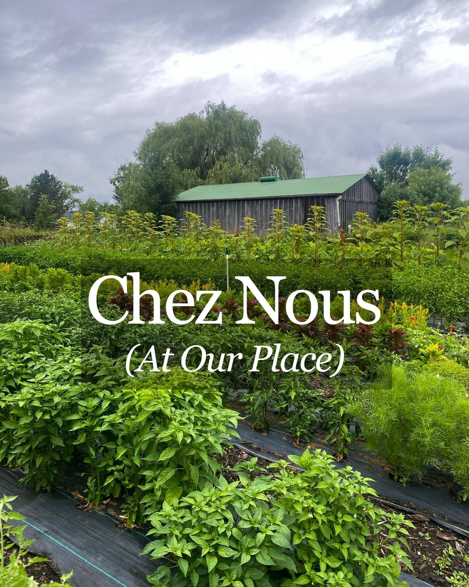

Our Story

Chez Nous Farm is a small family farm in Stevensville, Ontario, in the heart of Niagara. For more than a decade, Shirley and Rick have grown distinctive vegetables, herbs, plants and specialty crops for local families and some of Niagara’s restaurants.
We grow seasonally and on a small scale, with a particular love for unusual varieties, exceptional flavour and crops you don't often find elsewhere. Our work follows the rhythm of the season: starting seeds, tending plants, harvesting by hand and sharing what the land gives us.
For us, farming is about good food, thoughtful growing and lasting relationships with the people we feed.